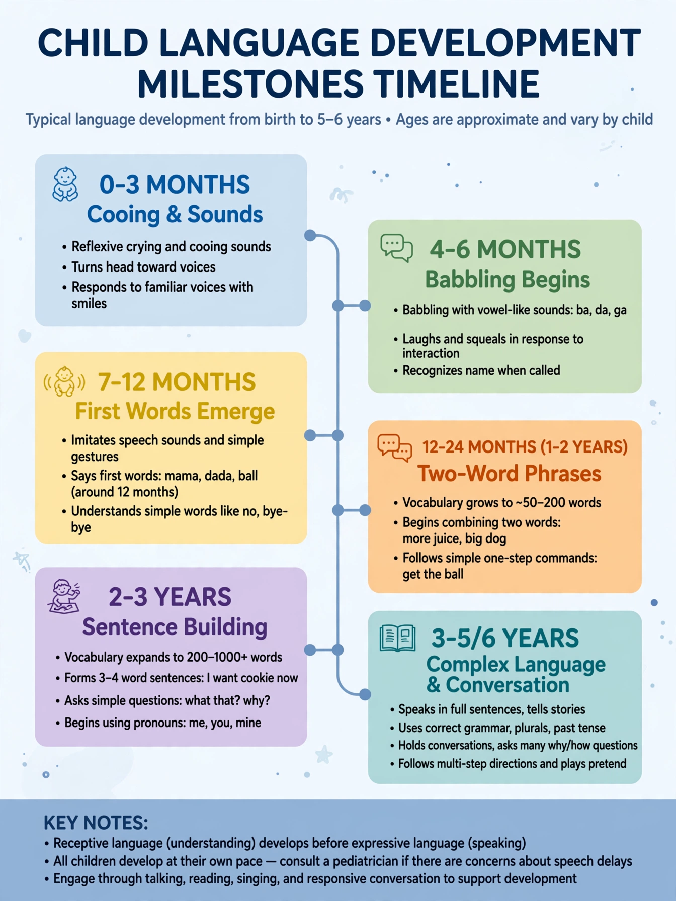

| Language acquisition | |
|---|---|
| Field | Psycholinguistics, developmental psychology |
| Milestones | Babbling ~6 mo; first words ~12 mo; two-word stage ~18–24 mo |
| Key theories | Nativism (Chomsky), usage-based, social interactionist |
Language acquisition is the process by which humans acquire the capacity to perceive, produce and understand language. First-language acquisition by children is remarkably rapid and uniform: without explicit instruction, nearly all children master the grammar of their native language by about age five, passing through predictable stages of cooing, babbling, single words, two-word combinations and increasingly complex sentences.

Infants begin by discriminating the sounds of their language; by six months they babble in syllables, and around their first birthday produce first words. The "vocabulary explosion" of the second year and the two-word (telegraphic) stage precede full sentences. Children make characteristic errors — over-regularising past tenses ("goed") — that reveal rule-learning rather than mere imitation.
B. F. Skinner proposed that language is learned by imitation and reinforcement. Noam Chomsky's 1959 critique of that view launched the nativist programme: children, he argued, are born with a universal grammar, an innate faculty that makes acquisition possible despite the "poverty of the stimulus". Usage-based and social-interactionist approaches (Tomasello, Bruner) instead emphasise statistical learning, intention-reading and the scaffolding of caregiver interaction. The truth is widely thought to combine innate biases with rich input.
Evidence from deprived children and from second-language learners supports a critical (sensitive) period: acquisition is easiest in early childhood, and late first-language exposure, as in the case of "Genie", leaves lasting grammatical deficits.
Second-language acquisition · Universal grammar · Aphasia · Critical period hypothesis